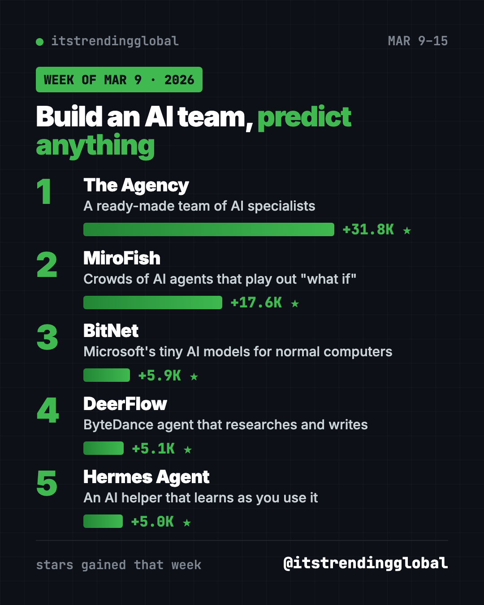

Home › Top repos › GitHub trending this week
Most Popular GitHub Repos, Week of March 9, 2026
- Top repos
- Published 2026-10-15
- 7 min read
- Updated 2026-10-16
- By the It's Trending Global team
Most popular GitHub repos week of March 9, 2026: The Agency, MiroFish, BitNet, DeerFlow and Hermes Agent, explained simply with setup lines.
The most popular GitHub repos week of March 9, 2026 were The Agency, MiroFish, BitNet, DeerFlow and Hermes Agent. The Agency, a ready-made team of AI specialists, gained about 31,800 stars, the biggest week since OpenClaw's run in early February.
Every repo on this list is about AI agents, helpers that take actions instead of just chatting. Some form teams, some run whole "what if" worlds, and one runs AI on an ordinary laptop. Here is each in plain words.
Key takeaways
- The Agency gives your AI helper a long list of expert roles to switch between.
- MiroFish builds a small world of AI agents to play out how an event might unfold.
- BitNet is Microsoft's way to run small "1-bit" AI models fast on a normal computer.
- DeerFlow from ByteDance researches, writes code and makes content on its own.
- Hermes Agent from Nous Research learns from each task and gets better over time.
Most popular GitHub repos week of March 9, 2026 compared
| Rank | Repo | Stars gained | What it does | Setup |
|---|---|---|---|---|
| 1 | The Agency | +31.8K | Team of AI specialist roles | Easy, has an app |
| 2 | MiroFish | +17.6K | Simulates crowds of AI agents | Hard, needs API keys |
| 3 | BitNet | +5.9K | Runs tiny AI models on CPUs | Hard, for tinkerers |
| 4 | DeerFlow | +5.1K | AI agent for research and writing | Medium, setup wizard |
| 5 | Hermes Agent | +5.0K | Self-improving personal AI helper | Easy, one line |
Gains are for March 9 to 15, 2026. Totals were checked on GitHub on October 16, 2026.

1. The Agency: hire a whole AI team
Stars: +31.8K this week · about 160K total today
What it is: The Agency is a big collection of AI "agents," each one a specialist with its own personality and way of working. The README mentions roles from frontend developer to Reddit community expert to "reality checker." You add them to your AI helper, then ask for one by name. It started from a Reddit thread.
Who it's for: Solo founders, freelancers and small teams who want expert-style help on demand.
One everyday use: "Activate the marketing role and write three launch posts for my bakery."
Install it: The easiest way is the free Agency Agents app for Mac, Linux and Windows. On a Mac, copy and paste this:
brew install --cask msitarzewski/agency-agents/agency-agents
Install the agents from https://github.com/msitarzewski/agency-agents into Claude Code and list the roles I can use.
2. MiroFish: play out "what if" with AI crowds
Stars: +17.6K this week · about 79K total today
What it is: MiroFish is a prediction engine. You give it starting material, like a news report or a story, and ask a question. It builds a digital world full of AI agents with their own memories. Then it lets them interact and writes a prediction report. You can chat with any agent afterwards. One demo even imagines the lost ending of the Chinese classic Dream of the Red Chamber.
Who it's for: Writers, students and researchers who like testing ideas.
One everyday use: Upload a short story and ask how the characters might react to a twist.
Install it: You need Node.js 18+, Python 3.11 or 3.12, and uv. Copy and paste this:
git clone https://github.com/666ghj/MiroFish.git
cd MiroFish
cp .env.example .env
npm run setup:all
npm run dev
Add an AI model key and a Zep Cloud key to .env first, then open http://localhost:3000.
Set up MiroFish from https://github.com/666ghj/MiroFish, help me fill in .env, and run a small simulation under 40 rounds.
⚠️ Heads up: The README warns that simulations use a lot of AI calls, which can cost money. It suggests starting with fewer than 40 rounds. Try the free online demo first.
3. BitNet: AI that runs on a regular computer
Stars: +5.9K this week · about 41K total today
What it is: Most AI models need a strong graphics card. BitNet is Microsoft's official tool for running "1-bit" models, which store their knowledge in a much smaller way. That lets them run fast on a normal processor. Microsoft reports speedups of 1.37x to 5.07x on ARM chips and big energy savings.
Who it's for: Tinkerers who want private AI on an old laptop.
One everyday use: Chat with Microsoft's small BitNet model offline, with no cloud account.
Install it: This one is for people comfortable with Python. Copy and paste this:
git clone --recursive https://github.com/microsoft/BitNet.git
cd BitNet
pip install -r requirements.txt
Then follow the README to download the model and build it. Or try the online demo linked in the README.
Follow the BitNet README to install it, download BitNet-b1.58-2B-4T, and start a chat with it on this computer.
4. DeerFlow: ByteDance's research agent
Stars: +5.1K this week · about 84K total today
What it is: DeerFlow is an AI agent from ByteDance that can research, write code and create content. It splits big jobs among helper agents, remembers things, and runs code in safe sandboxes. Version 2.0 is a full rewrite. Its README says it hit number one on GitHub Trending on February 28, 2026.
Who it's for: People who want a do-it-all research helper they can run themselves.
One everyday use: "Research the best budget e-bikes and write me a one-page comparison."
Install it: Copy and paste this:
git clone https://github.com/bytedance/deer-flow.git
cd deer-flow
make setup
A wizard asks you to pick an AI provider and safety settings. The README says it takes about two minutes.
Install DeerFlow from https://github.com/bytedance/deer-flow, run make setup with me, and choose the safest sandbox options.
5. Hermes Agent: the helper that learns
Stars: +5.0K this week · about 254K total today
What it is: Hermes Agent from Nous Research turns hard tasks into reusable skills and improves them as you use it. It remembers past chats, can run tasks on a schedule, and talks to you in Telegram, Discord, Slack, WhatsApp or Signal. You can use almost any AI model.
Who it's for: Anyone who wants a personal AI helper that gets better the more they use it.
One everyday use: "Every morning at 8, send me a short report on news about electric cars."
Install it: On Mac or Linux, copy and paste this:
curl -fsSL https://hermes-agent.nousresearch.com/install.sh | bash
Install Hermes Agent from https://github.com/NousResearch/hermes-agent and connect it to my Telegram.
See Hermes Agent on GitHub · Read our full Hermes Agent guide
Which one should you try first?
- You want quick wins: install The Agency app or Hermes Agent. Both are easy.
- You love "what if" questions: try the MiroFish online demo.
- You have an old laptop and patience: try BitNet.
- You need research done: set up DeerFlow.
FAQ
What were the most popular GitHub repos the week of March 9, 2026?
The Agency, MiroFish, BitNet, DeerFlow and Hermes Agent gained the most stars from March 9 to 15, 2026.
Can MiroFish really predict the future?
It simulates how AI agents react to a situation. Treat its reports as creative "what if" stories, not facts.
What does "1-bit" mean in BitNet?
The model stores its numbers in a tiny format. That makes it smaller and faster, so it can run on a normal processor.
Are these tools free?
All five are open source. Most need an AI model, and paid API keys can cost money as you use them.
See the best GitHub repos of March 2026 and March 2026 in AI. Read the March 2 list or move on to March 16.
Want a new free tool explained every day? Follow @itstrendingglobal on Instagram.
Keep reading

Trending GitHub Repos October 2026: The Top 5 So Far
The trending GitHub repos of October 2026 so far: a free Photoshop-style editor, an AI art studio, a big AI model for gaming PCs and more, explained.

Trending GitHub Repos This Week, Oct 5 2026: The Top 5
Trending GitHub repos this week Oct 5 2026: Matt Pocock's skills, the openGym workout tracker, e2e testing, HyperFrames video and claude-mem memory.

GitHub Trending September 28, 2026: Hindsight and Paperclip
GitHub trending September 28 2026: Hindsight, Paperclip, NVIDIA's OpenShell and a free 542-lesson AI course, with setup steps for each.